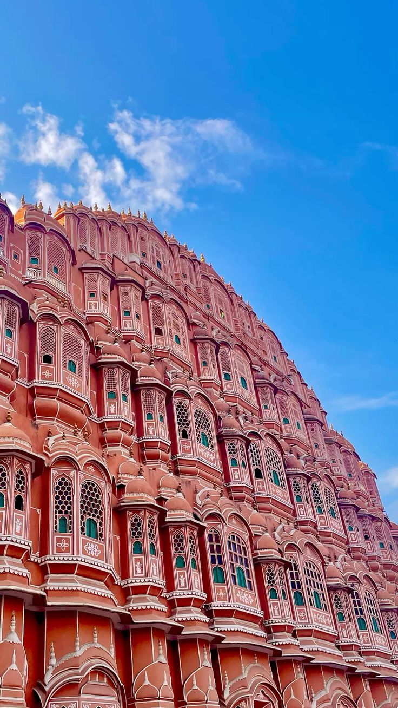
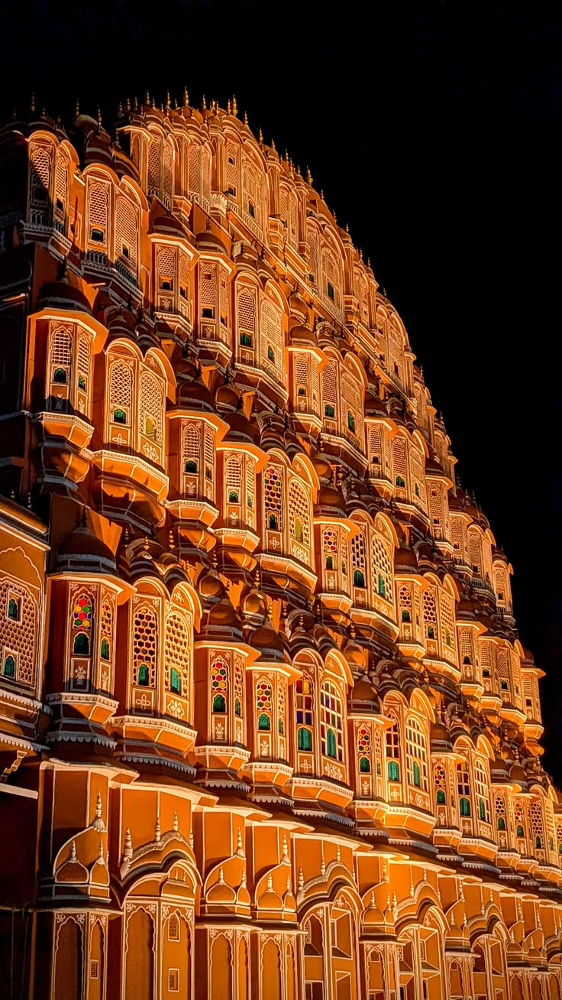
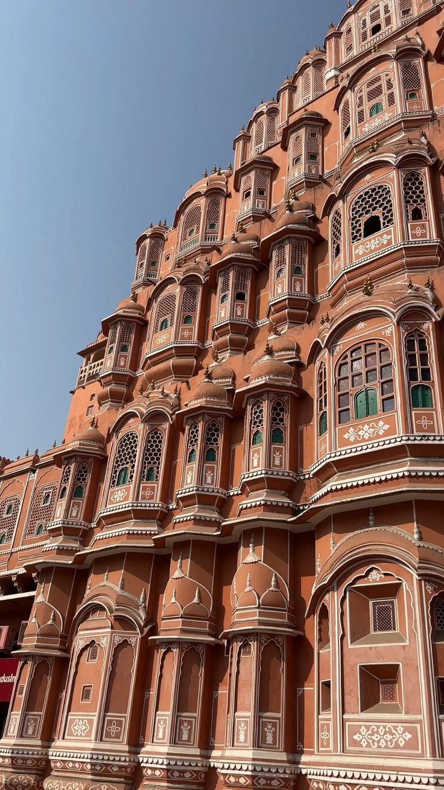

Hawa Mahal
The Palace of Winds
- Built
- 1799
- Built by
- Maharaja Sawai Pratap Singh
- Architect
- Lal Chand Ustad
- Style
- Rajput with Mughal influence
- Material
- Red and pink sandstone
- Best time
- Sunrise, when the facade glows

About Hawa Mahal
Hawa Mahal is a five-storey honeycomb of stone, rising about 15 metres above the Badi Choupad. Its front is pierced by 953 small windows called jharokhas, each with fine latticework. The pink and red sandstone changes colour through the day, warmest at sunrise.
The building is really a screen wall attached to the City Palace zenana. It let the women of the royal household watch street processions and festivals without being seen. Air moving through the lattice also kept the rooms cool in summer, which is how the palace got its name.
History
- 1727Sawai Jai Singh II founds Jaipur as a planned city.
- 1799Sawai Pratap Singh builds Hawa Mahal, reportedly inspired by the crown of Krishna, whom he worshipped.
- 1876Jaipur is painted pink to welcome the Prince of Wales; the colour becomes the city's identity.
- 2000sMajor conservation work repairs the facade and its lattice screens.
Hawa Mahal through the day

